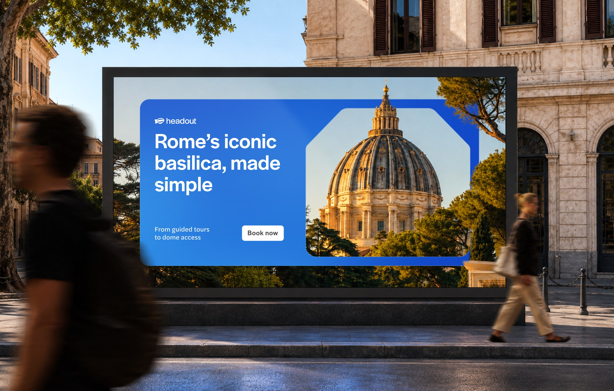

Layouts
Layout is where the logo, colour, type and imagery come together. Ours rests on two ideas: a column grid that keeps every format in order, and portals, a small family of shapes that frame the experience. Together they let one system stretch from an app banner to a billboard and still look like Headout.
Grid system
Almost everything we design sits on a column grid. We use six of them, from two columns up to ten, plus a modular grid, and between them they cover most of what we make. Choose the grid by the format and how much it has to hold, then align the logo, type and images to its columns and keep the margins and gutters consistent. Switch on “See how it works” to see each grid's margins, gutters and columns.

Portals
Portals are our graphic language. They are simple shapes that act as a doorway into an experience: a way to frame an image, hold a message or lead the eye. Used consistently, they make a layout recognisably ours before the logo is even read.

Portal system
The system is built from six shapes, running from the simplest to the more complex. Each one can stand alone, and together they read as one family. Use one shape per layout and let it do the framing.
Portal application
In practice, portals show up in two ways. Most of the time the experience image fills the layout and the portal sits within it. When an image can't run edge to edge, the portal becomes the frame that holds it.
Usage 1
Experience image first
Our primary layout is a single experience image running edge to edge. The image does the talking, and a portal sits within it where there is room, framing the subject or holding the message. If the image is busy or space is tight, leave the portal out. The layout still works without it.
Usage 2
Portal as a frame
Not every layout can carry a full-bleed image. Split layouts with copy on one side, product screens and compositions with several images leave no clean space for a portal inside the picture, and forcing one in hurts legibility. Here the portal becomes a mask, with the image sitting inside the shape. The aim is never to shrink the image or crop out what matters in it. The portal is there to frame the experience, so keep the subject whole and let the shape draw the eye to it.